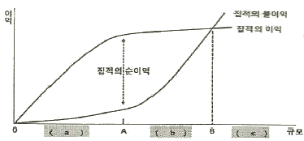
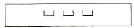
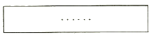
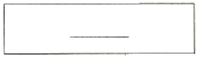
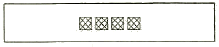
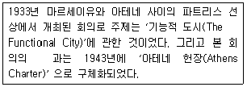
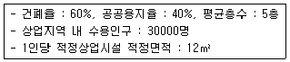
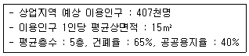
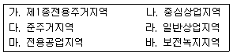

도시계획기사 (2014-03-02 기출문제)
1과목: 도시계획론
1. 계획이론을 실체적 이론(Substantive Theories)과 절차적이론(Procedural Theories)으로 구분할 때, 실체적 이론에 대한 설명으로 틀린 것은?
- 경제 또는 사회의 구조나 현상 등을 설명하고 예측하여 문제의 해결 대안을 제시하는 이론이다.
- 다양한 계획 활동에 있어 필요로 하는 분야별 전문 지식에 관한 이론이다.
- 도시계획에서 실체적 이론이란 토지이용계획, 교통계획 등에 관한 이론이 된다.
- 계획이 추구하는 목표와 가치에 따라 계획안을 만들어내는 과정에 관한 공통적이고 일반적인 이론이다.
(정답률: 81%)

2. 버제스(Burgess)가 주장한 도시공간이론에서 수공업이나 소규모의 공장이 입지함으로써 주거환경이 악화되고 지가가 하락하여 비공식 부문의 종사자들이 유입되면서 슬럼 및 불량주택지구를 형성하는 지대는?
- 슬럼지대
- 노동자주택지대
- 점이지대
- 통근자지대
(정답률: 79%)
3. 도시조사 자료를 자료원에 대한 접근이 직접적 혹은 간접적이냐에 따라 1차 자료와 2차 자료로 구분할 때, 이에 대한 설명으로 틀린 것은?
- 1차 자료는 도시계획의 대상이 되는 단위 지역이나 당해 지역의 주민들로부터 현지조사나 관찰, 면접 등을 통해 직접적으로 도출한 자료이다.
- 2차 자료에 비해 1차 자료는 비교적 적은 노력과 비용으로 계획가가 원하는 정보를 얻을 수 있다.
- 1차 자료는 계획가가 원하는 현실감 있는 정확한 정보를 제공해 줄 수 있다는 장점이 있다.
- 도시계획을 위한 도시조사에서는 1차 조사와 2차 조사가 병행하여 이루어지는 것이 일반적이다.
(정답률: 84%)
4. 바람직한 미래의 도시상으로 거리가 먼 것은?
- 건전한 삶의 공간을 창조하는 도시
- 중앙집권적인 자치체로서의 기능과 역할을 하는 도시
- 생산적인 활동 여건을 구비하는 도시
- 복지로운 사회 체제를 확립하는 도시
(정답률: 85%)
5. 영국 환경부에서 1932년 지자체 행정구역 전역을 대상으로 공간계획을 수립하는 제도로 만든 근거 법령은?
- 도시 및 농촌 계획법
- 도시기본법
- 연방건설법
- 건축법과 건축령
(정답률: 84%)
6. 토지이용의 밀도 유형과 측정지표가 잘못 연결된 것은?
- 1인당주거면적 = 주거건물면적 / 가구수
- 용적률 = 건물면적 / 토지면적
- 건폐율 = 건물바닥면적 / 토지면적
- 호수밀도 = 주택수 / 토지면적
(정답률: 83%)
7. 교통계획을 계획기간에 따라 분류할 때, 단기교통계획에 비하여 장기교통계획이 갖는 특징으로 틀린 것은?
- 소수의 대안 위주이다.
- 다양한 교통수단을 동시에 고려한다.
- 교통수요가 비교적 고정되어 있음을 가정한다.
- 자본집약적이다.
(정답률: 59%)
8. 다음 기반시설 중 유통ㆍ공급시설이 아닌 것은?
- 방송ㆍ통신시설
- 유통업무설비
- 공동구
- 방수설비
(정답률: 79%)
9. 둘 이상의 시 또는 군의 공간구조 및 기능을 상호 연계시키고 환경을 보전하며 광역시설을 체계적으로 정비하기 위하여 필요한 경우 지정한 계획권의 장기발전방향을 제시하는 계획은?
- 도시ㆍ군기본계획
- 국토 및 지역계획
- 수도권정비계획
- 광역도시계획
(정답률: 83%)
10. 우리 도시의 경제기반 약화, 인구감소, 고령화 사회 등 경제ㆍ사회적 여건 변화에 대응하여 과거 국토해양부가 제시한 '미래도시 비전 2020'에서 제시한 4대 정책목표(4C City)가 아닌 것은?
- 경쟁력(Competitive)있는 도시
- 편리한(Convenient) 생활도시
- 조용한(Calm) 전원도시
- 깨끗한(Clean) 녹색도시
(정답률: 82%)
11. 유클리드 지역제(Euclidean Zoning)에 대한 설명으로 틀린 것은?
- 주택지에 공장ㆍ아파트 등을 배제하는 용도의 순화를 도모하였다.
- 개발의 억제보다 개발의 유도 및 촉진에 관심을 두었다.
- 토지의 용도를 사전에 확정적으로 지정하였다.
- 토지이용의 규제는 각각의 필지 단위를 중심으로 하였다.
(정답률: 79%)
12. 토지와 시설에 대한 물리적 계획 요소가 아닌 것은?
- 밀도
- 동선
- 배치
- 용도
(정답률: 74%)
13. 다음 중 개발권양도제도(TDR)에 대한 설명으로 옳지 않은 것은?
- 실제 적용된 예는 많지 않으나 보전과 개발, 재개발과의 조화를 도모할 수 있는 제도이다.
- 개발할 토지 총량의 한도 내에서 개발권을 부여한다.
- 토지이용의 분산을 도모하기 위한 것으로 대도시 문제 해결을 위해 도입된 제도이다.
- 어떤 토지에 규정되어 있는 개발어용한도 가운데 미사용 부분을 다른 토지에 이전하여 토지이용을 실현하는 권리이다.
(정답률: 67%)
14. 2010년 현재 인구 40만명, 주거지 면적 2000ha인 도시가 2020년도 목표 인구를 50만명, 인구 밀도를 200인/ha로 하고자 할 때 추가적으로 필요로 하는 주택지면적은?
- 500ha
- 1000ha
- 1500ha
- 2500ha
(정답률: 59%)
15. 해당 토지에 대한 용도지역ㆍ지구ㆍ구역, 도시계획시설, 도시계획사업과 입안내용, 각종 규제에 대한 저촉여부를 확인하는 내용 및 지적도에 도시계획선을 포시한 도면으로 구성된 것을 무엇이라 하는가?
- 건축물대장
- 토지이용계획확인원
- 토지대장
- 재산세 과세대장
(정답률: 77%)
16. 도시화의 단계와 직접 이익의 발생의 관계에서, 각 구간 a, b, c에 알맞은 도시화단계를 순서대로 나열한 것은?

- 집중적 도시화 - 분산적 도시화 - 역도시화
- 집중적 도시화 - 역도시화 - 분산적 도시화
- 분산적 도시화 - 집중적 도시화 - 역도시화
- 분산적 도시화 - 역도시화 - 집중적 도시화
(정답률: 81%)
17. 근대국제건축회의(CIAM)의 아테네헌장(1933)에서 구분한 도시의 활동 기능에 해당하지 않는 것은?
- 공공
- 주거
- 위락
- 교통
(정답률: 57%)
18. 프리드만(Friedmann)에 의해 발전된 계획이론으로 공익이라고 정의되는 불확실한 계획의 목표를 추구하기 위한 과학적 접근방법을 비판하면서 인간적 요소를 강조하여 계획의 집행에 직접 영향을 받는 사람들과의 대화를 통해 계획을 수립하여야 한다는 계획이론은?
- 종합적 계획(Synoptic Planning)
- 점진적 계획(Incremental Planning)
- 교류적 계획(Transactive Planning)
- 옹호적 계획(Advocact Planning)
(정답률: 82%)
19. 집단생잔법에 대한 설명으로 올바른 것은?
- 기준년도의 인구와 출생률, 사망률, 인구이동 등의 변화요인을 고려하여 장래인구를 예측한다.
- 과거의 일정 기간에 나타난 실제 인구의 변화 자료에 복리이율방식을 적용하여 장래인구를 예측한다.
- 경제적 압출요인과 흡인요인이 도시인구를 변화시키는 요소라고 가정하고, 이들 간의 관계를 방정식으로 표현하여 장래인구를 예측한다.
- 장래 산업개발계획을 바탕으로 업종별 취업인구의 예측 결과를 바탕으로 총인구를 예측한다.
(정답률: 77%)
20. 서양 중세도시의 규모 결정에 가장 큰 영향을 미친 것은?
- 방위, 교통을 비롯한 지리적 요인
- 방어를 위한 성곽 축조 능력
- 교회와 수도원의 인문사회적 요인
- 토지, 물, 식량을 비롯한 생활요소의 공급능력
(정답률: 55%)
2과목: 도시설계 및 단지계획
21. 생활권의 위계가 큰 것에서 작은 것으로의 나열이 옳은 것은?
- 근린주구 → 근린분구 → 인보구 → 지역(지구)
- 지역(지구) → 근린주구 → 근린분구 → 인보구
- 지역(지구) → 인보구 → 근린주구 → 근린분구
- 지역(지구) → 근린분구 → 인보구 → 근린주구
(정답률: 92%)
22. 다음 중 뷰캐넌보고서(Buchanan Report)의 “통과교통으로부터 생활환경 보호”의 개념과 가장 관계있는 것은?
- 슈퍼블럭
- 거주환경지역
- 보행자데크
- 획지분할
(정답률: 48%)
23. 공동주택을 건설하는 주택단지에서 기본적으로 공해방지 또는 조경을 위한 식재 등의 필요한 조치를 하기 위하여 확보하여야 하는 녹지의 기준 면적은?
- 그 단지면적의 10%에 해당하는 면적
- 그 단지면적의 20%에 해당하는 면적
- 그 단지면적의 30%에 해당하는 면적
- 그 단지면적의 40%에 해당하는 면적
(정답률: 59%)
24. 국토교통부장관, 시ㆍ도지사, 시장 또는 군수가 지구단위 계획구역으로 지정할 수 있는 대상이 아닌 것은?
- 유통단지개발촉진법에 의한 유통단지
- 도시개발법에 따라 지정된 도시개발구역
- 주택법에 따른 대지조성사업지구
- 도시 및 주거환경정비법에 따라 지정된 정비구역
(정답률: 44%)
25. 지구단위계획에 대한 도시ㆍ군관리계획결정도의 표시기호가 틀린 것은?
- 건축지정선

- 건축한계선

- 벽면지정선

- 공공보행통로

(정답률: 44%)
26. 구릉지 주택의 획지계획에 있어 일조와 조망을 확보하기 위해 우선적으로 고려해야 할 사항은?
- 경사향(Aspect)
- 미기후(Micro-climate)
- 수문(Hydrology)
- 토질(Soil)
(정답률: 84%)
27. 쉬라바니(Hamid Shiravani)가 제시한 도시설계의 요소에 해당하지 않는 것은?
- 토지이용(Landuse)
- 건물형태와 매싱(Building form and massing)
- 보존(Preservation)
- 환경의 질(Quality of environment)
(정답률: 59%)
28. 해미드(Hamid)가 제시한 도시설계의 규범적 접근방식(canonic approach)의 분류에 포함되지 않는 것은?
- 체계적 방법(the system approach)
- 단편적 방법(the fragmental process)
- 개괄적 방법(the synoptic method)
- 점진적 방법(the incremental method)
(정답률: 43%)
29. 아래의 설명에 해당하는 것은?

- 근대건축가협회 회의
- 모범도시건설계획 회의
- 국제전원도시협회 회의
- 근린주구개발 회의
(정답률: 85%)
30. 주거단지 경관계획의 기본방향으로 가장 적합하지 않은 것은?
- 자연조건의 반영
- 조화와 개성의 부여
- 획일적 시각적 이미지
- 커뮤니티 감각의 부여
(정답률: 83%)
31. 도시공원 및 녹지 등에 관한 법률에 의한 경관녹지의 주요 기능으로 가장 옳은 것은?
- 도시민에게 산책 공간으로 제공하는 선형의 녹지
- 재해발생시 주민의 피난지대 확보
- 도시의 자연적 환경 보전 또는 개선
- 대기오염, 소음, 진동 등 공해의 차단 및 완화
(정답률: 76%)
32. 1967년 뉴욕에서 처음으로 채택되기 시작한 제도로, 도심부 내 특정지역이나 부지에서 공공과 민간의 개발을 효율적으로 유도, 촉진함으로써 공공이 의도하는 구체적인 도시설계 목표를 달성하기 위해 개발된 특수한 형태의 지역지구제는?
- 영향지역지구제(Impact Zoning)
- 유동지역지구제(Floating Zoning)
- 특별지역지구제(Special Zoning)
- 성능지역지구제(Performance Zoning)
(정답률: 81%)
33. 영국 밀톤케인즈(Milton Keynes)의 특징으로 틀린 것은?
- 영국 런던의 확산 인구를 수용하기 위한 신도시이다.
- 근린분구의 구성을 통하여 사회 계층의 혼합을 도모하였다.
- 전형적인 침상도시(Bed Town)이다.
- 주요 간선도로는 격자형으로 이루어져 있고, RED WAY를 통해 차량과 보행자를 분리하였다.
(정답률: 72%)
34. 주택단지의 총세대수가 2000세대 이상인 경우 기간도로와 접하거나 기간도로로부터 당해 단지에 이르는 진입도로의 폭은 최소 얼마 이상이어야 하는가?
- 8m 이상
- 12m 이상
- 15m 이상
- 20m 이상
(정답률: 72%)
35. 도시지역외 지역에 지정하는 지구단위계획구역을 당해 구역의 중심기능에 따라 구분할 때, 그 분류에 해당하지 않는 것은?
- 주거형
- 역사문화형
- 산업유통형
- 관광휴양형
(정답률: 69%)
36. 단지계획에 있어서 생활 편익시설의 배치방법에 대한 설명으로 가장 적합한 것은?
- 상가는 단지 내의 통합주차장과 인접하여 배치한다.
- 근린공공시설은 다른 관련 시설과 독립적으로 분리ㆍ배치한다.
- 어린이놀이터는 주차장과 인접한 곳에 배치한다.
- 초등학교는 가급적 근린분구단위의 중심에 배치한다.
(정답률: 78%)
37. 다음과 같은 도시계획 조건에서 소요되는 상업지역의 적정면적은?

- 15ha
- 20ha
- 150ha
- 200ha
(정답률: 74%)
38. 도시ㆍ군관리계획과 지구단위계획에 대한 설명 중에서 잘못 기술된 것은?
- 도시ㆍ군관리계획은 그 범위가 특별시ㆍ광역시ㆍ특별자치시ㆍ특별자치도ㆍ시 또는 군 전체에 미친다.
- 도시ㆍ군관리계획은 토지이용계획과 기반시설의 정비 등에 중점을 둔다.
- 지구단위계획은 관할 행정구역 내의 일부 지역을 대상으로 토지이용계획과 건축물계획이 서로 환류되도록 한다.
- 지구단위계획은 특정 필지에 대한 입체적 토지이용계획과 평면적 시설계획이 조화를 이루도록 하는데 중점을 둔다.
(정답률: 50%)
39. 도시설계 관련 제도의 변천과 관련한 다음 사항 중, 각 제도가 도입되었던 당시의 법적 근거가 틀린 것은?
- 지구단위계획제도 : 국토의 계획 및 이용에 관한 법률
- 도시설계 지구지정제도 : 도시계획법
- 미관지구제도 : 건축법
- 상세계획제도 : 도시계획법
(정답률: 62%)
40. 국토의 계획 및 이용에 관한 법률에 의한 지구단위계획구역의 지정목적을 이루기 위하여 지구단위계획에 반드시 포함되어야 하는 사항이 아닌 것은?
- 대통령령으로 정하는 기반시설의 배치와 규모
- 건축물 높이의 최고한도 또는 최저한도
- 건축물의 용도제한, 건축물의 건폐율 또는 용적률
- 건축물의 배치ㆍ형태ㆍ색채 또는 건축선에 관한 계획
(정답률: 61%)
3과목: 도시개발론
41. 도시 및 주거환경정비법에 의한 정비사업이 아닌 것은?
- 주거환경개선사업
- 주택재건축사업
- 도시환경정비사업
- 재정비촉진사업
(정답률: 69%)
42. 도시재정비 촉진을 위한 특별법에서의 도시재정비촉진지구의 특성에 따른 유형이 아닌 것은?
- 주거지형
- 중심지형
- 상업지형
- 고밀복합형
(정답률: 57%)
43. 경제성 분석 시, 계량화 및 가치화가 불가능한 효과에 금전적 가치를 부여해야 할 필요성이 있는 경우 사용하는 방법은?
- 변이-할당 분석
- 조건부 가치측정법
- 권리분석
- 시장성분석
(정답률: 73%)
44. 수요예측의 정성적 예측모형으로 조사하고자 하는 특정사항에 대한 전문가 집단을 대상으로 반복 앙케이트를 시행하여 의견을 조사하는 방법은?
- 델파이방법
- 판단결정모델
- 로짓모형
- 허프(Huff)모형
(정답률: 88%)
45. TND(Traditional Neighborhood Development)에 대한 설명으로 틀린 것은?
- 커뮤니티가 살아있던 이전 도시들을 모티브로 삼아 과거도시의 계획적 특성을 현대 도시에 적용하고자 한 도시개발 수법이다.
- 보행중심적 근린주구를 의미한다.
- 현대 도시에서 나타나는 고밀개발의 폐해를 비판하고 저밀개발을 유도한다.
- 도시 내 보행, 자전거, 대중교통 이용을 장려한다.
(정답률: 83%)
46. 도시개발방식의 유형별 분류가 틀린 것은?
- 개발주체 - 공공개발, 민간개발, 민관 합동개발
- 토지취득방식 - 수용방식, 환지방식, 혼용방식
- 개발대상지역 - 신도시 개발, 위성도시개발
- 토지의 용도 - 택지개발, 유통단지개발, 복합단지개발
(정답률: 76%)
47. 일반적인 부동산개발금융 방식의 구분 중 부채에 의한 조달방식으로 대출자가 부동산 개발에 의해 발생하는 수익의 배분에 일부 참여하는 방식은?
- sale & lease back
- participation loan
- interest only loans
- 자산 매입 조건부 대출
(정답률: 75%)
48. 압축도시(Compact City)에 대한 설명으로 틀린 것은?
- 토지이용은 단일이용(unit land use)을 추구해야 한다.
- 지속가능한 개발이 가능하도록 등장한 도시개발 패러다임 중 하나이다.
- 압축도시의 개념은 직주근접과 관련이 있다.
- 환경부하를 최소화하고 정주지 개발의 효율성을 높이려는 목적을 갖는다.
(정답률: 85%)
49. 민간사업자가 건설한 사회기반시설의 소유권을 일단 정부에 이전하고 다시 정부로부터 관리운영권을 임대 받는 방식은?
- ABS
- PF
- CM
- BTL
(정답률: 87%)
50. 아래 조건에 따른 상업용지의 수요 면적은?

- 0.75km2
- 1.13km2
- 3.13km2
- 5.81km2
(정답률: 83%)
51. 21세기 지구환경시대에 등장한 도시개발 패러다임으로 가장 거리가 먼 것은?
- 스마트성장(smart growth)
- 위성도시(satellite town)
- 컴팩트시티(compact city)
- 어반빌리지(urban village)
(정답률: 69%)
52. 환지방식과 관련된 용어에 대한 설명이 틀린 것은?
- 환지란 사업 시행 전에 존재하던 권리 관계에 변동을 가하고 각 토지의 위치, 지적, 토지이용상황 및 환경 등을 고려하여 사업 시행 후 새로이 조성된 대지에 기존의 권리를 이전하는 행위를 말한다.
- 보류지란 환지방식에 의하여 조성되는 토지 중 일반 환지대상 토지 외의 토지를 말하며 체비지, 공공시설용지 및 기타용지를 말한다.
- 체비지란 도시개발사업으로 인하여 발생하는 사업비용을 충당하기 위하여 사업 시행자가 취득하여 집행 또는 매각하는 토지를 말한다.
- 감보란 토지소유자는 환지방식 개발사업으로 얻은 각각의 수익에 따라 사업비용의 충당과 공공시설의 설치를 위한 용지를 부담하여야 하는데 이에 따라 종전의 토지면적에 비해 환지의 면적이 감소하는 것을 말한다.
(정답률: 54%)
53. 지분조달방안의 수법으로 2인 이상의 주체(극소수의 개인투자가 또는 기관)가 부동산 개발 등의 목적을 달성하기 위해 공동으로 사업하는 기업형태는?
- 합작사업(Joint Venture)
- 신디케이트(Syndicate)
- 유한 파트너십(LP : Limited Partnership)
- 유한책임파트너십(LLP : Limited Liability Partnership)
(정답률: 75%)
54. 수익성지수(Profitability Index, PI)에 대한 설명으로 틀린 것은?
- 수익성지수가 1보다 클 때 해당 프로젝트는 사업성이 있는 것으로 평가한다.
- 프로젝트로부터 발생하는 할인된 전체 수입을 할인된 전체 비용으로 나눈 값이다.
- 순현재가치(NPV)가 0이면 수익성지수도 0이다.
- 여러 프로젝트의 평가에서 순현재가치법과 수익성지 수평가법은 서로 다른 대안을 택할 수 있다.
(정답률: 83%)
55. 시ㆍ도지사는 지정하려는 택지개발지구의 면적의 규모가 최고 얼마 이상인 경우 국토교통부장관의 승인을 받아야 하는가?
- 30만m2
- 90만m2
- 100만m2
- 330만m2
(정답률: 68%)
56. 부동산 시장 및 각종 생산과 설비를 위한 투자의 경우에도 널리 사용되는 개념으로, 기업의 부채에 대한 이자가 영업 이익의 변동 세후 순이익의 변동을 확대시키는 현상은?
- 승수효과
- 꾸르노효과
- 레버리지효과
- 파레토효과
(정답률: 76%)
57. 국토의 계획 및 이용에 관한 법률상의 개발행위허가에 관한 설명으로 옳지 않은 것은?
- 도시계획사업에 의한 개발행위도 당해 지자체 도시계획위원회 심의를 통하여 허가대상이 된다.
- 건축물의 건축 또는 공작물의 설치, 토지의 형질변경, 토석의 채취, 토지분할, 녹지지역ㆍ관리지역 또는 자연환경 보전지역에 물건을 1월 이상 쌓아놓는 경우는 개발 행위 허가대상이다.
- 관리지역의 토지형질변경의 허용범위는 3만m2미만이다.
- 개발행위를 하려는 자는 특별시장ㆍ광역시장ㆍ특별자치시장ㆍ특별자치도지사ㆍ시장 또는 군수의 허가를 받아야 한다.
(정답률: 45%)
58. 역사보존도시의 필요성 및 의의와 가장 거리가 먼 것은?
- 도시의 품격보다는 수적인 인구 유발을 통하여 도시의 활력을 부여하는 역할을 한다.
- 개성적이고 다양한 경관을 나타내어, 고층화ㆍ대형화ㆍ획일화되어 가는 도시 환경의 문제점을 해소하여 도시에 다양성을 부여한다.
- 역사 환경이 형성된 배경과 사상을 이해하고, 과거와 현재를 연결시켜 도시의 역사성을 인식하는 도시 속 경험을 통해 도시생활을 풍부하게 한다.
- 도시의 발전과 맥락을 이해할 수 있는 전통적 기반 보존을 통해 다른 도시와의 차별성을 부각시킬 수 있다.
(정답률: 83%)
59. 재개발의 유형에 대한 설명이 옳은 것은?
- 철거 재개발(redevelopment) : 도시환경 및 시설에 있어서 불량 또는 노후화 현상이 현재까지는 발생하지 않았으나 현 상태로 방치할 경우 환경악화가 예상되는 지역에 예방적 조처로 시행하는 방식
- 수복 재개발(rehabilitation) : 관리상 부실로 인하여 도시환경이 악화될 우려가 있거나 이미 악화된 지역에 대하여 기존시설을 보존하면서 구역 전체의 기능과 환경을 회복하거나 개선하는 소극적인 방식
- 보존 재개발(conservation) : 낙후되고 노후화된 기존의 도시지역의 시설을 보수, 확장, 새로운 시설을 첨가하는 방법을 통하여 도시환경을 개선하는 방식
- 개량 재개발(improvement) : 기존의 시설을 전면적으로 철거하고 새로운 시설물로 대체시켜 쾌적하고 능률적이며 기능적인 도시환경을 창출해내는 적극적인 방식
(정답률: 81%)
60. 도시마케팅에 대한 설명으로 가장 거리가 먼 것은?
- 도시마케팅의 시장은 공공서비스를 생산하고 공급하는 도시정부와 그것을 소비하는 단위들이 커뮤니케이션 하는 도시공간이다.
- 도시정부 혹은 도시 내의 공ㆍ사적 주체가 목표 시장에 대해 경쟁 도시보다 효율적으로 상품을 제공하고 만족을 극대화하기 위해 효율적으로 관리하는 것이다.
- 도시나 도시 내 특정 장소를 상품화하는 것으로, 일반 재화나 용역과는 다른 특징을 갖는다.
- 재화나 서비스를 다른 지역에서 수입하여 부가가치를 창출하는 것을 주요 목적으로 한다.
(정답률: 79%)
4과목: 국토 및 지역계획
61. 제1차 국토종합개발계획에서의 권역 설정이 옳은 것은?
- 4대권 8중권 17소권
- 28개 지방정주생활권
- 9개 광역생활권
- 4개 대도시경제권
(정답률: 76%)
62. 어떤 지역의 총 고용인구는 500,000명이고 이 중 비기반부문의 고용인구가 400,000명이다. 그런데 이 지역에 외부지역으로의 수출만을 목적으로 하는 기반활동이 새롭게 입지하여 5,000명의 고용증가가 예상된다면 이 지역의 총 고용인구는 얼마나 증가하는가?
- 10,000명
- 15,000명
- 20,000명
- 25,000명
(정답률: 68%)
63. 허쉬맨(Hirshman)의 불균형 지역성장이론을 가장 잘 설명하는 것은?
- 대약진(Big-push) 전략
- 역류효과(backwash effect)와 파급효과(spread effect)
- 쇄신의 계층적 파급(hierarchical diffusion)
- 극화(Polarization)와 적하효과(trickling down)
(정답률: 70%)
64. 서울시 주변에 위치한 수원, 안성, 용인 등으로 대학교가 이전되거나 분교가 설치되는 현상과 가장 직접적으로 관련있는 것은?
- 국토기본법
- 수도권정비계획법
- 경기도 도시계획조례
- 서울특별시 도시계획조례
(정답률: 85%)
65. 최상위 도시의 인구를 기준으로 도시의 순위와 인구규모와의 관계를 이용하여 도시 정주체계를 분석한 대표적인 학자는?
- 지프(Zipf)
- 베버(A. Weber)
- 뢰쉬(Losch)
- 아이자드(Isard)
(정답률: 75%)
66. 인구 200만명의 A시와 인구 50만명의 B시가 40km 떨어진 곳에 위치하고 있다. 컨버스의 수정소매인력이론에 의해 제안된 시장분기점은 A시로부터 얼마의 거리에서 형성되는가?
- 10km
- 13.3km
- 26.7km
- 30.0km
(정답률: 66%)
67. 독시아디스가 설정한 인간의 정주공간단위가 작은 것부터 큰 것으로 옳게 나열한 것은?
- town-city-metropolis-megalopolis-conurbation
- city-town-metropolis-conurbation-megalopolis
- town-city-metropolis-conurbation-megalopolis
- city-town-conurbation-megalopolis-metropolis
(정답률: 64%)
68. 지수성장모형의 설명 중 틀린 것은?
- 과거 인구가 거의 동일하게 증가되거나 감소되었고 미래에도 이와 같은 추세가 계속될 것으로 예상되는 도시에 적용한다.
- 인구가 정률 변화를 할 때 적합한 모형으로 증가율은 과거의 일정기간에 나타난 실제인구의 변화로부터 계산할 수 있다.
- 안정적인 인구변화추세를 나타내는 도시의 경우 이 방법을 사용하면 인구의 과도 예측을 초래할 위험이 높다.
- 인구의 기하급수적인 증가를 나타내고 있기 때문에 단기간에 급속히 팽창하는 신도시의 인구를 예측하는 경우에 유용하다.
(정답률: 68%)
69. 국토의 난개발 방지를 위해 새로 제정한 국토기본법과 국토의 계획 및 이용에 관한 법률로 통합 폐지된 법률이 아닌 것은?
- 국토이용관리법
- 도시계획법
- 도시개발법
- 국토건설종합계획법
(정답률: 59%)
70. 계획권역(Planning Region)에 대한 설명으로 틀린 것은?
- 지역의 의존성보다는 동질성에 기초한 지역개념이다.
- 대개의 경우 정치, 경제, 사회, 문화적인 유대가 깊고 특히 어떤 중심지와 주변 지역과의 기능적 의존 관계가 존재하는 범위를 묶어 설정하게 된다.
- 계획의 필요에 따라 설정된 지역을 가리킨다.
- 고용 또는 소득의 극대화나 지역개발의 극대화 등 어떤 목적을 가장 경제적인 방법으로 달성케 하는 연속된 공간이다.
(정답률: 47%)
71. 크리스탈러가 주장한 중심지이론(central place theory)의 포섭원리로서 설명되지 않은 것은?
- 중심원리 : K = 1
- 시장원리 : K = 3
- 교통원리 : K = 4
- 행정원리 : K = 7
(정답률: 76%)
72. 수도권으로의 기능 집중에 따른 도시문제와 거리가 먼것은?
- 도시경관의 악화
- 교통난의 심화
- 환경문제심화
- 인력난 가중
(정답률: 88%)
73. 다음 중 프랑스 파리권의 집중억제를 위하여 실시한 정책이 아닌 것은?
- 오스만의 파리대개조계획
- 파리소재 대학의 지방이전
- 신축 건물에 대한 부담금제도
- 일정규모이상의 기업체의 신증축시 사전허가제 적용
(정답률: 73%)
74. 다음 중 대도시지역의 공간구조를 설명하는 대표적 유형으로 볼 수 없는 것은?
- 방사회랑형
- 위성도시형
- 확산도시형
- 단핵도시형
(정답률: 69%)
75. 다음의 지역 문제 해결책 중 그 성격이 가장 다른 하나는?
- 산업이전법(영국)
- 공업배치법(영국)
- 특수지역개발촉진법(영국)
- 테네시강 종합개발계획(미국)
(정답률: 76%)
76. 지역산업연관분석모형의 기본가정과 거리가 먼 것은?
- 모든 산업은 하나의 선형적ㆍ동질적 생산함수를 갖는 다.
- 측정 기간 동안 교역계수는 동일하다.
- 각 산업의 생산물은 결합생산물로 추계한다.
- 외부경제와 비경제는 없다.
(정답률: 40%)
77. 지역 간 균형과 사회계층 간 형평성을 중시하는 개발방식을 주요 전략으로 하여, 지역생활권개발의 이론적 근거가 되는 것은?
- 성장거점이론
- 기본수요이론
- 경제기반이론
- 중심지이론
(정답률: 62%)
78. 지역의 소득격차를 측정하는 방법이 아닌 것은?
- 로렌츠곡선
- 지니계수
- 쿠즈네츠비
- 허프모형
(정답률: 69%)
79. 쇄신의 공간적 확산 유형으로 가장 거리가 먼 것은?
- 전염확산
- 역류확산
- 계층확산
- 이전확산
(정답률: 48%)
80. 지역계획과정에서 주민 참여의 기대 효과로 볼 수 없는 것은?
- 주민의 지지와 협조를 통한 집행의 효율화
- 주민요구에 대한 행정책임의 강화
- 주민의 심리적 욕구충족과 주체성 회복
- 주민요구를 통한 행정 수요 파악으로 사업의 우선순위 결정에 도움
(정답률: 66%)
5과목: 도시계획관계법규
81. 도시ㆍ군계획시설의 결정ㆍ구조 및 설치기준에 관한 규칙상 용도지역별 도로율 기준이 틀린 것은?
- 주거지역 : 20% 이상 30% 미만
- 상업지역 : 25% 이상 35% 미만
- 공업지역 : 10% 이상 20% 미만
- 녹지지역 : 5% 이상 15% 미만
(정답률: 62%)
82. 주차장법령상 설치된 부설주차장의 용도를 변경할 수 잇는 경우가 아닌 것은?
- 도시개발법에 따른 도시개발사업으로 인하여 그 전부 또는 일부를 사용할 수 없게 된 주차장으로서 시ㆍ도지사의 확인을 받은 경우
- 시설물의 내부 또는 그 부지 안에서 주차장의 위치를 변경하는 경우로 시장ㆍ군수 또는 구청장이 주차장의 이용에 지장이 없다고 인정하는 경우
- 해당 시설물의 부설주차장의 설치 기준을 초과하는 주차장으로서 그 초과 부분에 대하여 시장ㆍ군수 또는 구청장의 확인을 받은 경우
- 도로교통법의 규정에 따라 차량통행이 금지되어 시장ㆍ군수 또는 구청장이 해당 주차장의 이용이 사실상 불가능하다고 인정한 경우
(정답률: 44%)
83. 도시ㆍ군관리계획 입안에 있어 주민 의견 청취 공고 및 공람에 관한 설명 중 옳은 것은?
- 당해 지역을 주된 보급지역으로 하는 하나의 일간신문에 공고하고 14일간 일반이 열람할 수 있도록 하여야 한다.
- 당해 지역을 주된 보급지역으로 하는 2 이상의 일간 신문과 당해 시군의 인터넷 홈페이지에 14일 이상 일반인이 열람할 수 있도록 하여야 한다.
- 중앙지 일간신문에 1회 이상 공고하고 14일간 일반이 열람할 수 있도록 하여야 한다.
- 중앙지 일간신문에 2회 이상 공고하고 20일간 일반이 열람할 수 있도록 하여야 한다.
(정답률: 66%)
84. 도시공원 및 녹지 등에 고나한 법률상 도시공원에 해당하지 않는 것은?
- 국립공원
- 체육공원
- 묘지공원
- 어린이공원
(정답률: 79%)
85. 체육시설의 설치ㆍ이용에 관한 법률에 따른 공공체육시설에 해당하지 않는 것은?
- 전문체육시설
- 재활체육시설
- 직장체육시설
- 생활체육시설
(정답률: 54%)
86. 수도권정비계획법령에서 규정하는 광역적 기반 시설에 해당하지 않는 것은?
- 대규모 개발사업지구와 주변 도시간의 교통시설
- 환경오염 방지시설 및 폐기물 처리시설
- 용수공급계획에 의한 용수공급시설
- 대규모 개발사업지구 내의 주요 연수시설
(정답률: 74%)
87. 개발제한구역관리계획에 관한 설명으로 옳은 것은?
- 개발제한구역관리계획은 도시ㆍ군관리계획으로 결정한다.
- 국토교통부장관이 직접 관리계획을 수립하려면 중앙도시계획위원회의 심의를 거쳐야 한다.
- 10년 단위로 수립하여 5년마다 재정비하여야 한다.
- 시장ㆍ군수가 수립하여 시ㆍ도지사의 승인을 받아야 한다.
(정답률: 47%)
88. 도시ㆍ군계획시설로서 광장의 구분에 해당하지 않는 것은?
- 교통광장
- 일반광장
- 보행광장
- 지하광장
(정답률: 67%)
89. 도시ㆍ군관리계획에 포함되지 않는 것은?
- 용도지역ㆍ용도지구의 지정 또는 변경에 관한 계획
- 기반시설의 설치ㆍ정비 또는 개량에 관한 계획
- 광역계획권의 장기발전방향에 관한 계획
- 도시개발사업이나 정비사업에 관한 계획
(정답률: 68%)
90. 건축법상 건축을 하는 건축주가 해당 지방자치단체의 조례로 정하는 기준에 따라 대지에 조경이나 그 밖에 필요한 조치를 하여야 하는 기준은?
- 면적이 100m2 이상인 대지에 건축을 하는 경우
- 면적이 150m2 이상인 대지에 건축을 하는 경우
- 면적이 165m2 이상인 대지에 건축을 하는 경우
- 면적이 200m2 이상인 대지에 건축을 하는 경우
(정답률: 46%)
91. 주차장법령상 단지조성사업 등으로 설치되는 노외주차장에 경형자동차를 위한 전용주차구획을 설치하여야 하는 비율 기준으로 옳은 것은?(관련 규정 개정전 문제로 여기서는 기존 정답인 4번을 누르면 정답 처리됩니다. 자세한 내용은 해설을 참고하세요.)
- 노외주차장 총주차대수의 2% 이상
- 노외주차장 총주차대수의 3% 이상
- 노외주차장 총주차대수의 4% 이상
- 노외주차장 총주차대수의 5% 이상
(정답률: 75%)
92. 택지개발촉진법상의 공공시설용지가 아닌 것은?
- 어린이놀이터를 설치하기 위한 토지
- 공동주택을 설치하기 위한 토지
- 일반목욕장을 설치하기 위한 토지
- 노인정을 설치하기 위한 토지
(정답률: 65%)
93. 국토의 계획 및 이용에 관한 법률과 동법 시행령에서 규정한 용도지구에 해당하는 것은?
- 개발진흥지구
- 산업촉진지구
- 도시시설지구
- 시설용지지구
(정답률: 85%)
94. 수도권정비계획법령상 관계 행정기관의 장이 성장관리권역에서 공업지역을 지정할 수 없는 지역은?
- 과밀억제권역에서 이전하는 공장 등을 계획적으로 유치하기 위하여 필요한 지역
- 인구증가율이 수도권의 평균 인구증가율보다 낮은 지역
- 공장이 밀집된 지역을 재정비하기 위하여 필요한 지역
- 개발 수준이 다른 지역에 비하여 뚜렷하게 낮은 지역의 주민 소득 기반을 확충하기 위하여 필요한 지역
(정답률: 64%)
95. 해당 용도지역별 용적률의 최대한도가 가장 낮은 것부터 순서대로 옳게 나열한 것은?

- 바, 가, 다, 마, 라, 나
- 바, 가, 다, 라, 마, 나
- 바, 가, 마, 다, 나, 라
- 바, 가, 마, 다, 라, 나
(정답률: 63%)
96. 택지개발촉진법상 환매권에 관한 설명으로 틀린 것은?
- 수용 당시의 토지 등의 소유자로부터 승계를 받은 자는 환매권자가 될 수 없다.
- 수용한 토지 등의 전부 또는 일부가 필요 없게 되었을 때에 환매권자는 필요 없게 된 날부터 1년 이내에 환매할 수 있다.
- 환매권자는 환매로써 제3자에게 대항할 수 있다.
- 환매권자는 토지 등의 수용 당시 받은 보상금에 대통령령으로 정한 금액을 가산하여 시행자에게 지급하고 이를 환매할 수 있다.
(정답률: 74%)
97. 도시개발법상 환지방식으로 사업을 시행하는 경우 시행자가 청산금을 징수하거나 교부하는 시기 기준은? (단, 환지를 정하지 아니하는 토지에 대한 경우는 고려하지 않는다.)
- 등기완료 후
- 공사시행 완료 보고 후
- 환지처분 공고 후
- 환지계획 인가 후
(정답률: 73%)
98. 도시공원 및 녹지 등에 관한 법률상 “공원관리청”에 해당하는 자는?
- 국립공원관리공단
- 국토교통부장관
- 시장 또는 군수
- 도지사
(정답률: 61%)
99. 중앙행정기관의 장이나 지방자치단체의 장이 다른 법률에 따라 토지 이용에 관한 지역ㆍ지구ㆍ구역 또는 구획 등 중 대통령령으로 정하는 면적 이상을 지정 또는 변경하려면 국토교통부장관의 협의나 승인을 받아야 한다. 이때 국토교통부장관이 협의 또는 승인을 하기 위해 중앙도시계획위원회의 심의를 거치지 않아도 되는 경우는?
- 농림지역에서 「농지법」에 따른 농업진흥지역을 지정하는 경우
- 자연환경보전지역에서 「수도법」에 따른 상수원보호구역을 지정하는 경우
- 보전관리지역이나 생산관리지역에서 「습지보전법」에 따른 습지보호지역을 지정하는 경우
- 자연환경보전지역에서 「자연환경보전법」에 따른 생태ㆍ경관보전지역을 지정하는 경우
(정답률: 68%)
100. 도시 및 주거환경정비법령상 정비계획의 변경 시 주민에 대한 서면통보, 주민설명회, 주민공람 및 지방의회의 의견 청취절차를 거치지 아니할 수 있는 경우가 아닌 것은?
- 정비구역면적의 10퍼센트 미만의 변경인 경우
- 공동이용시설 설치계획의 변경인 경우
- 건축물의 건폐율 또는 용적률을 축소하는 경우
- 정비사업 시행예정시기를 3년의 범위 안에서 조정하는 경우
(정답률: 36%)